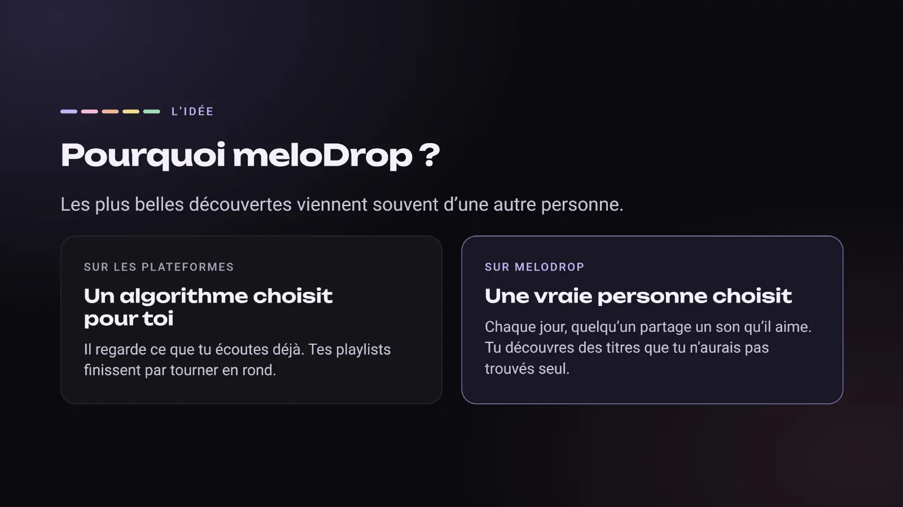
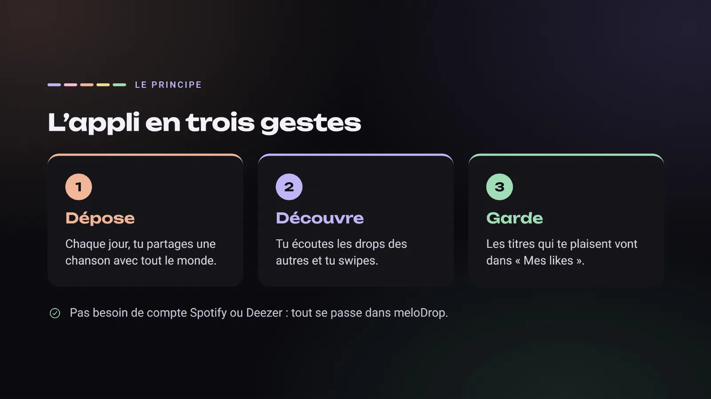
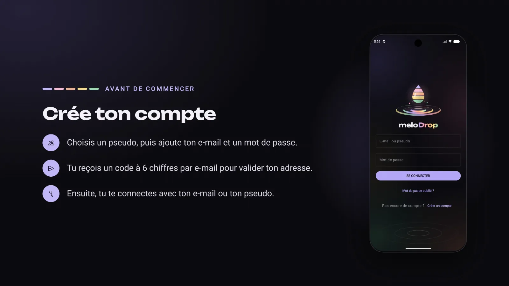
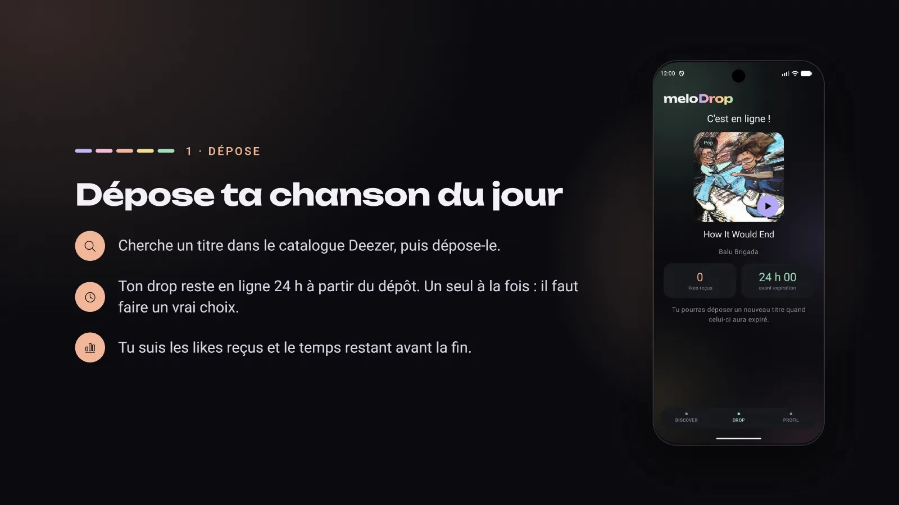
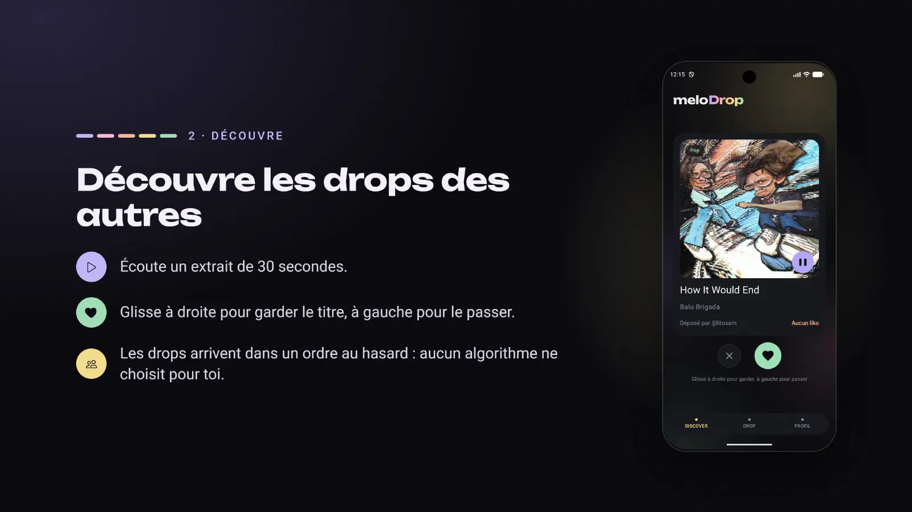
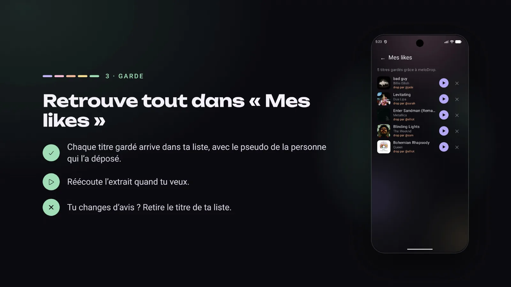
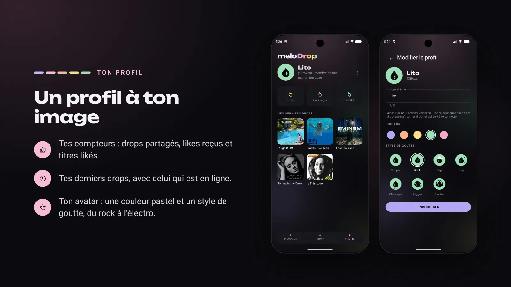
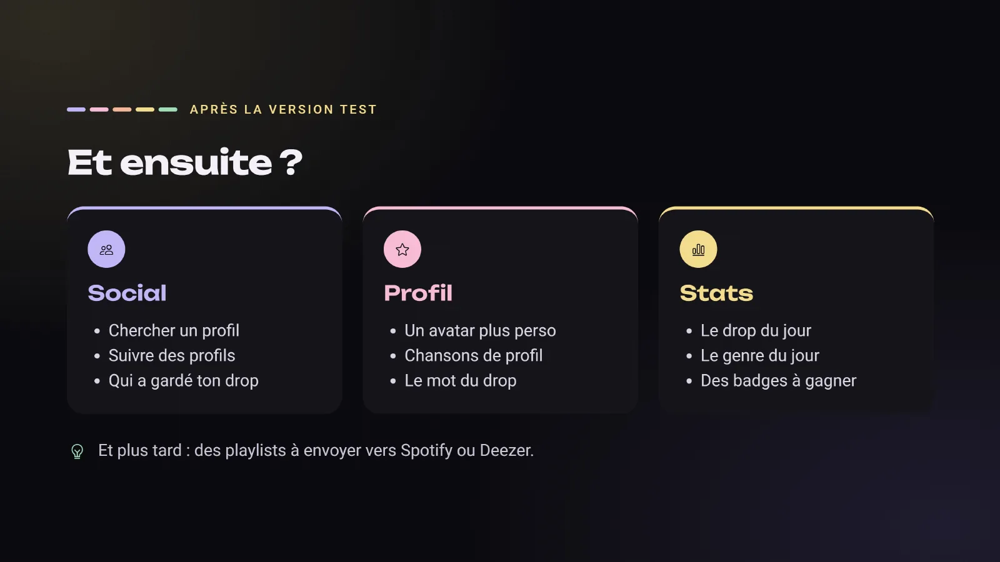

meloDrop
Une chanson par jour, choisie par quelqu'un, pas par un algorithme.
Pas d'algorithme ni de flux sans fin : chaque jour, chacun partage le titre qui compte pour lui, et toi, tu découvres ceux des autres.
Télécharger sur
Google Play
Bientôt
Envie de tester l'appli avant sa sortie ? Rejoins les testeurs sur WhatsApp ›
Comment ça marche








1 / 8
Touche une slide pour l'agrandir.